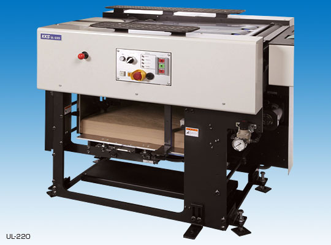
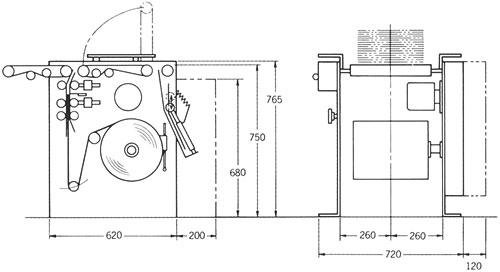
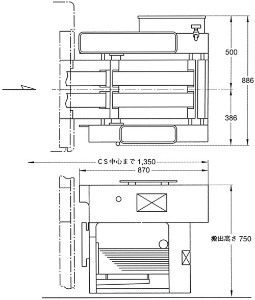
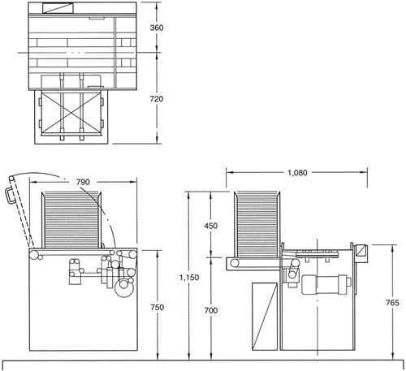
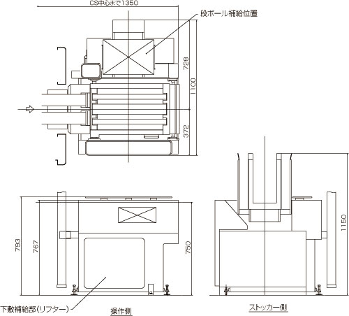

下敷供給装置ULシリーズは、カウンタースタッカーより搬出された新聞束の下に敷紙を敷き込み、搬送途中での新聞束最下紙の汚れや損傷を防止するために使用され、通常カウンタースタッカーの搬出部の直後に設置されます。
ULシリーズにはロール式と枚葉式とがあり、直進タイプの他に束の流れを直角方向に変える移載機能を備えた移載装置付があります。また、束間隔を平均化して下流機器の能力オーバーを防止する待合せ機能を備えた待合せ装置付もあります。
クラフトロール紙を一定の長さに切断し、新聞束の下に強制送りをしながら敷き込みます。
●シンプルな機構のため、操作が簡単でトラブルがありません。
●下敷供給に強制送り出し方式を採用していますので、小部数束に対しても確実に下敷を供給します。
●枚葉紙補助供給機構が付いていますので、巻取紙の供給トラブル時や交換時には枚葉紙が自動的に供給されます。
●段ボール紙を使用するような小さい束の場合、総ページ数情報により下敷紙の敷き込みを中止します。
| 下敷供給能力 | 45枚/分 |
|---|---|
| 用紙 | クラフト巻取紙 |
| 紙幅 285〜360mm | |
| 巻径 300mm | |
| 紙厚 0.1〜0.15mm | |
| 紙管寸法 | 内径76mm×上記紙幅（口金無し） |
| 下敷紙寸法 | 紙幅 285〜360mm |
| 紙長さ 430〜460mm | |
| （寸法範囲内で調整可能） | |
| 紙厚 0.1〜0.15mm | |
| 下敷供給枚数 | 紙厚 0.1mm、紙長さ 460mmのとき約1,330枚 |
| 用紙装着方法 | 装着が簡単な差込方式 |
| 巻取紙制動方法 | 巻取紙外周制動型 |
| ブレーキアーム方式 | |
| 巻取紙収納本数 | 1本 |
| コンベヤー速度 | 入口 54m/分 |
| 出口 40m/分 | |
| 電動機 | 400W×1台 |
| 電源容量 | 3相、AC200/220V、50/60Hz、0.5kVA |
| 圧縮空気圧 | 0.5Mpa |
| 空気消費量 | 0.015m3/min（normal）（30枚/分のとき） |
| 機械設置長さ | カウンタースタッカー中心より1,100mm |
| 総質量 | 210kg |
| 下敷供給方式 | 強制送り出し方式 |

" width="540" height="24">
クラフト枚葉紙を新聞束の下に強制送りをしながら敷き込みます。
●枚葉紙を使用していますので、簡単に下敷紙の補給ができます。
●下敷供給に強制送り出し方式を採用していますので、小部数束に対しても確実に下敷を供給します。
●端数出し時に束間隔が狭くなった場合でも、待合せ機構により束間隔を平均化しますので、下流機器の能力オーバーを防止します。
●段ボール紙を使用するような小さな束の場合、総ページ数情報により下敷紙の敷き込みを中止します。
| 下敷供給能力 | 45枚/分 |
|---|---|
| 用紙 | クラフト枚葉紙 |
| 下敷紙寸法 | 紙幅 300〜350mm |
| 紙長さ 450〜460mm | |
| 紙厚 0.1〜0.15mm | |
| 下敷ストック枚数 | 紙厚 0.1mmのとき2,000枚 |
| 用紙装着方法 | 引出し式リフターにセット |
| コンベヤー速度 | 入口 60m/分 |
| 出口 45m/分 | |
| 電動機 | 200W×1台、90W×1台、40W×1台 |
| 電源容量 | 3相、AC200/220V、50/60Hz、0.6kVA |
| 圧縮空気圧 | 0.5Mpa |
| 空気消費量 | 0.03m3/min（normal）（45枚/分のとき） |
| 機械設置長さ | カウンタースタッカー中心より1,350mm |
| 総質量 | 250kg |
| 下敷供給方式 | 強制送り出し方式 |

新聞束（1部以上任意部数）に段ボール紙を敷き込む装置で、クラフト下敷供給装置の下流に設置します。
●小端数束にこしを付け、バンド結束後の荷姿を安定させます。
●八ツ折り、小束処理ラインが不要になります。
●高い処理能力と操作性・保守性・安全性および耐久性を備えた信頼度の高い機械です。
| 下敷供給能力 | 40枚/分 |
|---|---|
| 用紙 | 両面段ボール |
| 下敷紙寸法 | 紙幅 280mm |
| 紙長さ 410mm | |
| 紙厚 3mmまたは5mm | |
| 下敷ストック高さ | 450mm |
| 束導入高さ | 750mm±10mm |
| コンベヤー速度 | 35m/分 |
| 電動機 | 200W×1台 |
| 60W×1台（クラッチブレーキ付） | |
| 電源容量 | 3相、AC200/220V、50/60Hz、0.5kVA |
| 圧縮空気圧 | 0.5Mpa |
| 空気消費量 | 0.045m3/min（normal）（40枚/分のとき） |
| 総質量 | 200kg |
| 下敷供給方式 | 敷き込み方式（コンベヤー下部より束下面に送り込む） |

" width="540" height="24">
枚葉式下敷供給装置と段ボール下敷供給装置を一体化した下敷供給装置です。
●カウンタースタッカーより搬出された新聞束の下にクラフト枚葉紙、または少端数束では段ボール紙を自動的に敷き込み、搬送途中での新聞束最下紙の汚れや損傷を防止します。
●レイアウトの省スペース化を図り、機械全長を従来機の枚葉式下敷装置と同一にすることにより、既設の発送レイアウトにも容易にULC-100を組み込むことができますので、省スペースでクラフト枚葉紙あるいは段ボールの両方を敷き込むことができます。また、段ボール送出しロール機構の採用により、優れた安定性を実現します。
| 下敷供給部 | |
| 下敷紙供給能力 | 45枚/分 |
|---|---|
| 用紙 | クラフト枚葉紙 |
| 下敷紙寸法 | 紙幅 300〜350mm |
| 紙長さ 450〜460mm | |
| 紙厚 0.1〜0.15mm | |
| 下敷供給方式 | 強制送り出し方式 |
| 下敷ストック枚数 | 紙厚 0.1mmのとき2,000枚 |
| 段ボール供給部 | |
| 下敷供給能力 | 40枚/分 |
| 用紙 | 両面段ボール紙 |
| 下敷紙寸法 | 紙幅 280mm |
| 紙長さ 410mm | |
| 紙厚 3mmまたは5mm | |
| 下敷供給方式 | 敷き込み方式（コンベヤー下部より束下面に送り込む） |
| 下敷ストック高さ | 450mm |
| 下敷、段ボール共通部 | |
| コンベヤー速度 | 入口 60m/分、出口 45m/分、待合せ機能付 |
| 電動機 | 200W 1台（コンベアー用） |
| 90W 1台（下敷紙送出し用） | |
| 40W 1台（下敷リフター昇降用） | |
| 60W 1台（段ボールフィード用 クラッチ、ブレーキ付） | |
| 電源容量 | 3相、AC200/220V、50/60Hz、0.6kVA |
| 圧縮空気圧 | 0.5Mpa |
| 空気消費量 | 0.045m3/min（normal）（最大） |
| 総質量 | 250kg（制御盤含む） |



- CopyRight © KKS,LTD.
株式会社KKS 〒555-0011 大阪市西淀川区竹島4丁目11番54号 TEL：06-6471-7771（代表） FAX：06-6477-5374